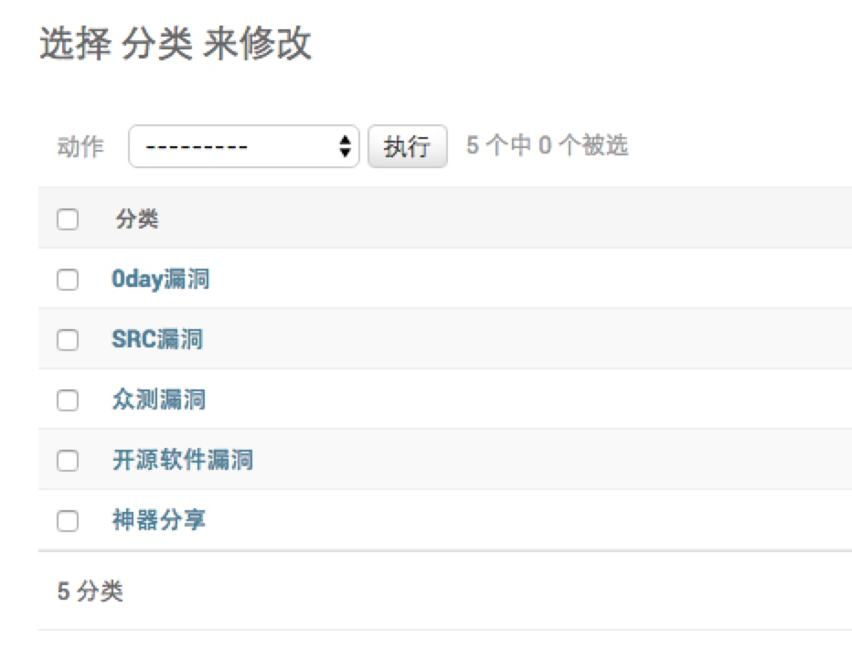

初始化分类# 使用docker-compose一键安装的Mooder，将会自动创建超级管理员账号。用源码安装的Mooder不会创建管理员账号，你可以执行如下命令创建一个新的管理员： python3 manage.py createsuperuser 关于管理员与审核员的相关说明，移步这里 登录管理员后台http://yoursite.com/admin/，即可添加分类。只有添加了分类，用户才能正常提交贡献。 